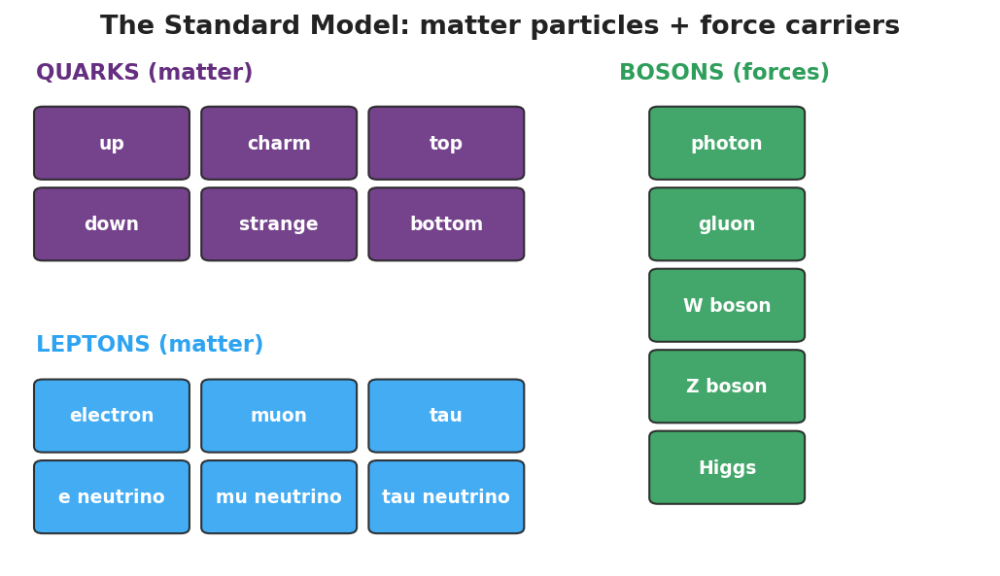

Unit: Modern Physics — Lesson 04: The Standard Model
Phenomenon
Zoom in on a chair: it's made of atoms. An atom is a nucleus plus electrons. The nucleus is protons and neutrons. So what is a proton made of? Scientists kept zooming — and found the zoom finally stops at a small set of particles that everything else is built from.

Driving Question
What are the smallest building blocks of matter, and how do scientists organize them?
Notice & Wonder
The zoom finally stops at a small set of particles. Write two things you notice and two things you wonder.
Initial Model
Draw a proton. If you think it has smaller parts inside, draw them and label what you would call them.
Investigate
Click any particle tile to read its properties — its type, charge, and whether it is fundamental. Then click quark tiles to build a proton: add up + up + down (uud) and watch the charges add to +1.
Click a tile to see its properties.
Proton builder: (empty) · total charge = 0
Make It Make Sense
- A proton is made of two up quarks and one down quark. Is a proton a fundamental particle? Explain.
- How is the Standard-Model chart similar to the periodic table?
- The electron is not made of quarks. Which family does it belong to, and what does that tell you about it?
Stuck? Sentence frame
"A ___ is a fundamental particle, but a ___ is made of smaller parts, so the ___ is fundamental and the ___ is not."
Key Vocabulary (max 3)
- quark — a fundamental matter particle; protons and neutrons are each built from three quarks (a proton is up-up-down)
- lepton — the other family of fundamental matter particles; the electron is a lepton
- fundamental particle — a particle with no smaller parts inside, as far as we know (quarks and leptons are fundamental; protons are not)
Revise Your Model
Return to your Initial Model of a proton. Redraw it using quark tiles (up, up, down) and check that the charges add to +1. Label which particles are fundamental.
Return to the Phenomenon
Restate the "what is everything made of?" zoom in one sentence using quark and fundamental particle. (Target: "Everything is built from fundamental particles — quarks, which make protons and neutrons, and leptons like the electron.")
Exit Ticket + Closing Reflection
- (a) Name the two families of fundamental matter particles. (b) A proton is made of two up quarks and one down quark — is a proton a fundamental particle? Explain. (c) The electron belongs to which family — quarks or leptons?
- Reflection: What's one question about the universe you now want to ask?